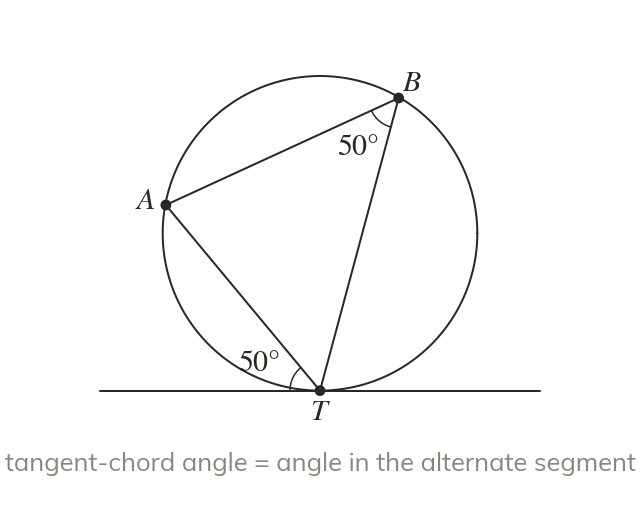

The alternate segment theorem
The angle between a tangent and a chord equals the angle in the alternate segment. That segment is on the other side of the chord.
When a chord is drawn from the point where a tangent touches a circle, the angle between the tangent and the chord equals the angle in the ALTERNATE segment – the segment on the OTHER side of the chord from the angle.